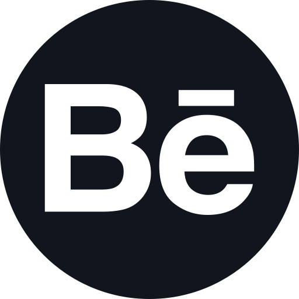
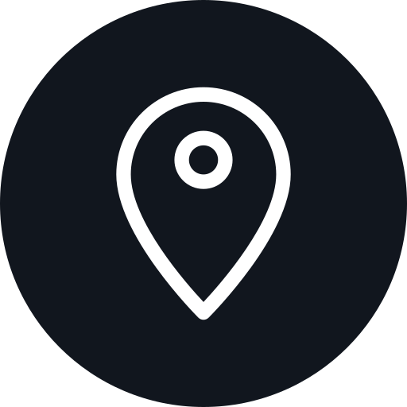

DESIGNER GRÁFICA
Sou uma pessoa focada e objetiva, o design para mim transcende barreiras permitindo conhecer e trabalhar com as mais diferentes tipos de culturas, lugares e pessoas, amo meu trabalho e a gestão que está envolvida por trás de cada processo que precede um bom projeto de Design gráfico, tenho enfoque em Marketing Digital e Branding porém estou sempre aberta a novas ideias e formas de fazer Design.
-Gestão de Design
-Motivada e Criativa
-Inglês Avançado
-Trabalho em equipe
@marina.samara05@gmail.com
(47)99928-6464
@MarinaSamara
Marina_Samara
BalneárioCamboriú, SC
-Gestora de Projetos
-Produção Gráfica Básica
-Design de Estampas
-Criação de Identidade Visual
-Criação de Embalagens
-Diagramação Básica
-Manipulação de Imagens
-Marketing Digital
.
-Pacote Office (Word,Excel,PowerPoint,Access..)
-Adobe Illustrator
-Adobe Photoshop
-Adobe InDesign
-Adobe XD
-Acrobat Pro DC
Universidade do Vale do Itajaí
Bacharel em Design Gráfico, término em 2021
Cursando o 6º de Design Gráfico Bachareal, na Universdiade do Valedo Itajaí, Campus Balneário Camboriú (UNIVALI).
Escola de Ensino Médio David Pedro Espindola
Formada em 2018
-Vice-presidente do Grêmio Estudantil
-Membro do Clube de Desenho
-Membro do Clube de Handebol
-Participação da 2ºfase das Olimpíadas de Matemática
Escola de Idiomas Fisk
Formada em 2017
Diploma de Ingles Avançado concluido pela escola de Idiomas Fisk
Tenho uma paixão por música e arte, adoro ler em todo e qualquer intervalo que consigo durante o dia. Amo séries e filmes e mundos distópicos, a fantasia e ficção sempre me acompanham ajudando minha criatividade. Atualmente me vejo muito no meio da pesquisa, além de julgar algo enriquecedor e necessário nesse ramo é uma coisa pela qual me sinto extremamente bem realizando.